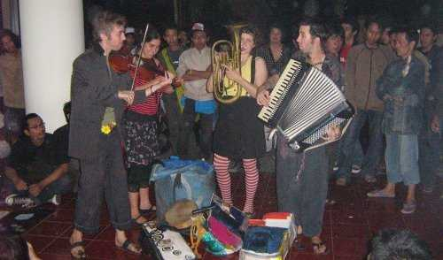
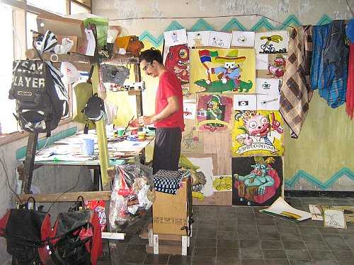

Jaromil's Musings

leave your comments
 printable page
printable page
This amazing group of young gypsies travelled the world by bike, reaching the far east countries of southern Asia.
I met them in Yogyakarta, on the Java island, where they performed in occasion of the Biennale at the end of 2007.
Here is their web page: www.cyclown.org
Their entertaining circus carries an important message, proving that is possible to travel the world without polluting it - and even have fun while doing it.
|  |
| Cyclown Performing in Jogja |
Here you can download an excerpt of the Cyclown performance live in Jogja Biennale.
A young eclectic musician, the violin player of the group is Raffaele Cataldo, waving his colourful tattooed hands on the strings of his instrument; his melodies recall Gypsy and Klezmer songs with a jazzy take, his style is quick as suggested by his personality, animated by a witty and razor-sharp humour.
Here is the interview I've made to "Reffe": sounds/cyclown_circus/cyclown-refe-interview.ogg
One incredible coincidence was to find out that the tall moustache figure in this band is actually born in my same birth place: Piero Di Silvestro. He is the bike expert of the group, active on an important part of the cyclown mission: he builds and repairs bikes, out of the recycling parts found anywhere, and he can share well his knowledge, contributing to the creation of "cycle-officinas" wherever he goes inspiring people, propagating out from his original hideout in the ExSnia Social Center in Rome, from where he started his long trip 3 years ago.
|  |
| Piero in his lab in Jogja |
Here is the interview I've made to Piero, in Italian language spoken in a way that should be well intelligible for people familiar with Latin languages: sounds/cyclown_circus/cyclown-piero-interview.ogg
Among the bicycle clowns there is one lady that you'll surely notice for her intense expressions, sweet interpretations and remarkable ability to impersonate a men in the Flamenco number of the show: Rocio, the southern American component of the erratic crew, wears a smile that is quite unique among the clowns, fitting with red roses as well fake moustaches. She is a long term member of the cyclowns being around since 7 years now, here is an interview to her in spanish mixed with italian: sounds/cyclown_circus/cyclown-rocio-interview.ogg
The last cyclown interviewed in this article is Tom and this time the language is Flemish mixed with my pitiful attempts to speak Dutch. Tom keeps his way coming and going out of the main route followed by the rest of the crew, you can rapidly tell he boosts it well while completing the brass section, here it follows his interview: sounds/cyclown_circus/cyclown-tom-interview.ogg
This number was played in the Jogja's Biennale performance, I was lucky to be sitting in front so i could record this excerpt with my modest photo-camera. As everything else in this journal, also this video is encoded using 100% free software, therefore you might need to download VideoLan to see it correctly, hope you'll reach to enjoy it! videos/cyclown_piero_and_rocio_flamenco.ogm

|


|


|
 copyleft 2000 - 2009 dyne.org
foundation and respective authors. Verbatim copying
and distribution is permitted in any medium, provided
this notice is preserved.
Send inquiries & questions to dyne.org's hackers. copyleft 2000 - 2009 dyne.org
foundation and respective authors. Verbatim copying
and distribution is permitted in any medium, provided
this notice is preserved.
Send inquiries & questions to dyne.org's hackers.
|

|
{kind=link}